This work is licensed under a Creative Commons Attribution-ShareAlike 4.0 International License
Introduction to machine learning¶
Some prediction examples¶
Machine learning is tailored for prediction, let’s look at some data and see how well it works
Predicting house prices¶
- Example from Mullainathan and Spiess (2017)
- Training on 10000 observations from AHS
- Predict log house price using 150 variables
- Holdout sample of 41808
AHS variables [ahs-variables]¶
ahs <- readRDS("ahs2011forjep.rdata")$df
print(summary(ahs[,1:20]))
## LOGVALUE REGION METRO METRO3 PHONE KITCHEN
## Min. : 0.00 1: 5773 1:10499 1:11928 -7: 1851 1:51513
## 1st Qu.:11.56 2:13503 2: 1124 2:39037 1 :49353 2: 295
## Median :12.10 3:15408 3: 202 9: 843 2 : 604
## Mean :12.06 4:17124 4: 103
## 3rd Qu.:12.61 7:39880
## Max. :15.48
## MOBILTYP WINTEROVEN WINTERKESP WINTERELSP WINTERWOOD WINTERNONE
## -1:49868 -8: 133 -8: 133 -8: 133 -8: 133 -8: 133
## 1 : 927 -7: 50 -7: 50 -7: 50 -7: 50 -7: 50
## 2 : 1013 1 : 446 1 : 813 1 : 8689 1 : 61 1 :41895
## 2 :51179 2 :50812 2 :42936 2 :51564 2 : 9730
##
##
## NEWC DISH WASH DRY NUNIT2 BURNER COOK
## -9:50485 1:42221 1:50456 1:49880 1:44922 -6:51567 1:51567
## 1 : 1323 2: 9587 2: 1352 2: 1928 2: 2634 1 : 87 2: 241
## 3: 2307 2 : 154
## 4: 1945
##
##
## OVEN
## -6:51654
## 1 : 127
## 2 : 27
##
##
##
library(GGally)
ggpairs(ahs[,c("LOGVALUE","ROOMS", "LOT","UNITSF","BUILT")],
lower=list(continuous="points", combo="facethist",
discrete="facetbar"),
diag=list(continuous="barDiag",discrete="barDiag")) +
theme_minimal()
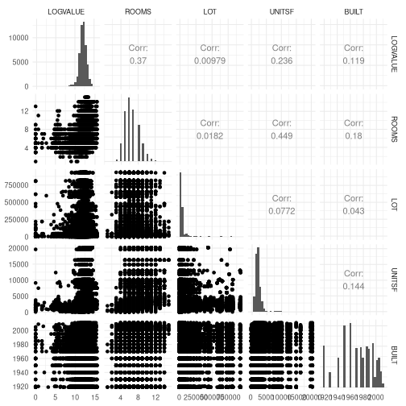
# use ms-reproduce.R from course git repo to download and run Mullainathon & Spiess data and code to
# create jepfittedmodels-table1.csv. Be aware that this will take many hours.
tbl <- read.csv("jepfittedmodels-table1.csv")
tab <- tbl[,3:ncol(tbl)]
rownames(tab) <- tbl[,2]
tab <- tab[1:5, c(1,2,3,5)]
colnames(tab) <- c("in sample MSE", "in sample R^2", "out of sample MSE", "out of sample R^2")
library(kableExtra)
kable_styling(kable(tab,
caption="Performance of different algorithms in predicting housing values",
format="html", digits=3),
bootstrap_options = c("striped", "hover", "condensed",
"responsive"), full_width=TRUE)
| in sample MSE | in sample R\^2 | out of sample MSE | out of sample R\^2 | |
|---|---|---|---|---|
| OLS | 0.589 | 0.473 | 0.674 | 0.417 |
| Tree | 0.675 | 0.396 | 0.758 | 0.345 |
| Lasso | 0.603 | 0.460 | 0.656 | 0.433 |
| Forest | 0.166 | 0.851 | 0.632 | 0.454 |
| Ensemble | 0.216 | 0.807 | 0.625 | 0.460 |
library(ggplot2)
load(file="jeperrorfig.RData")
print(fig)
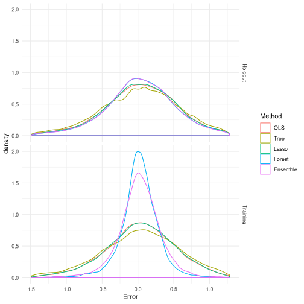
load(file="jeperrorfig.RData")
print(fig2)
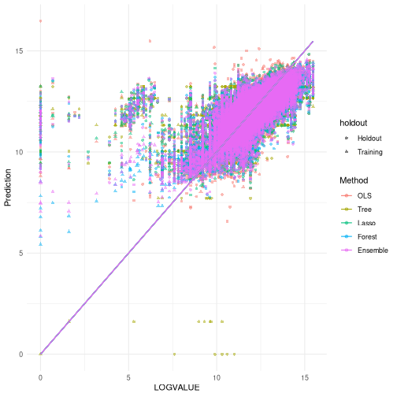
Predicting pipeline revenues¶
- Data on US natural gas pipelines
- Combination of FERC Form 2, EIA Form 176, and other sources, compiled by me
- 1996-2016, 236 pipeline companies, 1219 company-year observations
- Predict: $y =$ profits from transmission of natural gas
- Covariates: year, capital, discovered gas reserves, well head gas price, city gate gas price, heating degree days, state(s) that each pipeline operates in
load("pipelines.Rdata")
# data has problems before 1996 due to format change
data <- subset(data,report_yr>=1996)
# replace NA state weights with 0's
data[,59:107][is.na(data[,59:107])] <- 0
# spaces in variable names will create problems later
names(data) <- gsub(" ",".",names(data))
summary(data[,c("transProfit","transPlant_bal_beg_yr","cityPrice","wellPrice")])
## transProfit transPlant_bal_beg_yr cityPrice
## Min. : -31622547 Min. :0.000e+00 Min. : 0.4068
## 1st Qu.: 2586031 1st Qu.:2.404e+07 1st Qu.: 3.8666
## Median : 23733170 Median :1.957e+08 Median : 5.1297
## Mean : 93517513 Mean :7.772e+08 Mean : 5.3469
## 3rd Qu.: 129629013 3rd Qu.:1.016e+09 3rd Qu.: 6.5600
## Max. :1165050214 Max. :1.439e+10 Max. :12.4646
## NA's :2817 NA's :2692 NA's :1340
## wellPrice
## Min. :0.0008
## 1st Qu.:2.1230
## Median :3.4370
## Mean :3.7856
## 3rd Qu.:5.1795
## Max. :9.6500
## NA's :2637
library(GGally)
ggpairs(data[,c("transProfit","transPlant_bal_beg_yr","cityPrice","wellPrice")],
lower=list(continuous="smooth")) + theme_minimal()
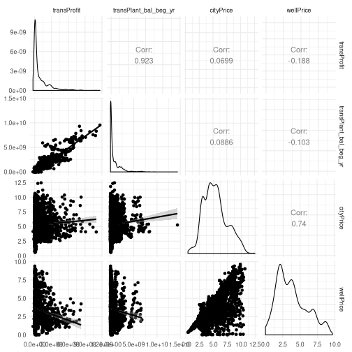
Predicting pipeline revenues : methods¶
- OLS : 67 covariates (year dummies and state(s) create a lot)
- Lasso
- Random forests
- Randomly choose 75% of sample to fit the models, then look at prediction accuracy in remaining 25%
We are focusing on Lasso and random forests because these are the two methods that econometricians have worked on the most. Other methods such as neural nets and support vector machines are also worth exploring. For now, you can think of Lasso and random forests these as black boxes that generate predictions from data. We will go into more detail soon.
## Create X matrix for OLS and random forests
xnames <-c("transPlant_bal_beg_yr", "reserve", "wellPrice", "cityPrice",
"plantArea", "heatDegDays",
names(data)[59:107] )
yname <- "transProfit"
fmla <- paste(yname,"~",paste(xnames,collapse=" + "),"+ as.factor(report_yr)")
ols <- lm(fmla,data=data,x=TRUE,y=TRUE)
X <- ols$x[,!(colnames(ols$x) %in% c("(Intercept)")) &
!is.na(ols$coefficients)]
y <- ols$y
train <- runif(nrow(X))<0.75
# OLS prediction on training set
y.t <- y[train]
X.t <- X[train,]
ols <- lm(y.t ~ X.t)
y.hat.ols <- ols$coefficients[1] + X %*% ols$coefficients[2:(length(ols$coef))]
df <- data.frame(y=y, y.hat=y.hat.ols, train=train, method="ols")
## Lasso
library(glmnet)
# Create larger X matrix for lasso
fmla.l <- paste(yname,"~ (",
paste(xnames,collapse=" + "),")*(report_yr + transPlant_bal_beg_yr +
reserve + wellPrice + cityPrice + plantArea + heatDegDays) + ",
paste(sprintf("I(%s^2)",xnames[1:6],collapse=" + "))
)
reg <- lm(fmla.l, data=data, x=TRUE,y=TRUE)
Xl <- reg$x[,!(colnames(reg$x) %in% c("(Intercept)")) &
!is.na(reg$coefficients)]
lasso <- cv.glmnet(Xl[train,],y[train],alpha=1,parallel=FALSE,
standardize=TRUE, intercept=TRUE, nfolds = 50)
y.hat.lasso <- predict(lasso, Xl, s=lasso$lambda.min, type="response")
df <- rbind(df, data.frame(y=y, y.hat=as.vector(y.hat.lasso),
train=train, method="lasso"))
## Random forest
library(grf)
rf <- regression_forest(X[train,],y[train],tune.parameters = TRUE)
y.hat.rf <- predict(rf, X)$predictions
df <- rbind(df, data.frame(y=y, y.hat=y.hat.rf, train=train,
method="random forest"))
# Neural network
library(RSNNS)
n <- nrow(X[train,])
p <- ncol(X)
rn <- floor(n^(1/(2*(1+1/(1+p))))/2)
xn <- normalizeData(X)
yn <- normalizeData(y)
nn <- mlp(x=xn[train,], y=yn[train], linOut=TRUE, size=rn)
yn.hat.nn <- predict(nn, xn)
y.hat.nn <- denormalizeData(yn.hat.nn, getNormParameters(yn))
df <- rbind(df, data.frame(y=y, y.hat=y.hat.nn, train=train,
method="neural network"))
ggplot(data=df,aes(x=y,y=y.hat,colour=method,shape=train)) + geom_point(alpha=0.5) +
geom_line(aes(y=y)) + theme_minimal()
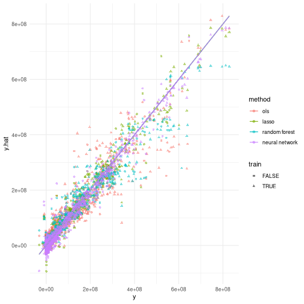
df$trainf <- factor(df$train, levels=c("TRUE", "FALSE"))
df$error <- df$y - df$y.hat
ggplot(data=df,aes(x=error,colour=method)) +
geom_density() + theme_minimal() +
xlim(quantile(df$error,c(0.01,0.99))) +
facet_grid(trainf ~ .,labeller=label_both)
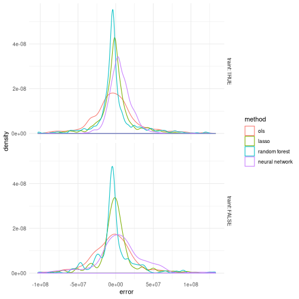
library(kableExtra)
fn <- function(df) with(df,c(mean((y.hat - y)^2)/var(y),
mean(abs(y.hat - y))/mean(abs(y-mean(y)))))
tab1 <-unlist(by(subset(df,train), df$method[train], FUN=fn))
tab1 <- (matrix(tab1,nrow=2))
rownames(tab1) <- c("relative MSE","relative MAE")
colnames(tab1) <- c("OLS","Lasso","Random forest","Neural Network")
tab2 <- unlist(by(subset(df,!train), df$method[!train], FUN=fn))
tab2 <- (matrix(tab2,nrow=2))
rownames(tab2) <- c("relative MSE","relative MAE")
colnames(tab2) <- c("OLS","Lasso","Random forest","Neural Network")
kable_styling(kable(tab1, caption="Training sample", format="html", digits=3),
bootstrap_options = c("striped", "hover", "condensed",
"responsive"), full_width=F)
| OLS | Lasso | Random forest | Neural Network | |
|---|---|---|---|---|
| relative MSE | 0.110 | 0.031 | 0.063 | 0.012 |
| relative MAE | 0.265 | 0.137 | 0.179 | 0.111 |
kable_styling(kable(tab2, caption="Hold-out sample", format="html", digits=3),
bootstrap_options = c("striped", "hover", "condensed",
"responsive"), full_width=F)
| OLS | Lasso | Random forest | Neural Network | |
|---|---|---|---|---|
| relative MSE | 0.125 | 0.064 | 0.093 | 0.092 |
| relative MAE | 0.288 | 0.199 | 0.232 | 0.278 |
In this table, relative MSE is the mean squared error relative to the variance of $y$, that is It is equal to $1-R^2$. Similarly, relative MAE is
$\En$ denotes the empirical expectation, $\En[y_i] = \frac{1}{n}\sum_{i=1}^n y_i$.
Lasso¶
- Lasso solves a penalized (regularized) regression problem
- Penalty parameter $\lambda$
- Diagonal matrix $\hat{\Psi} = diag(\hat{\psi})$
- Dimension of $x_i$ is $p$ and implicitly depends on $n$
- can have $p >> n$
We are following the notation used in Chernozhukov, Hansen, and Spindler (2016). Note that this vignette has been updated since it was published in the R Journal. To obtain the most recent version, install the hdm package in R, load it, and then open the vignette.
install.packages("hdm")
library(hdm)
vignette("hdm_introduction")
The choice of penalty (or regularization) parameter, $\lambda$, is important. When $\lambda = 0$, Lasso is the same as OLS. As $\lambda$ increases, the Lasso estimates will shrink toward 0. For large enough $\lambda$, some components of $\hat{\beta}$ become exactly 0. As $\lambda$ increases more, more and more components of $\hat{\beta}$ will be exactly $0$.
For some intuition about why Lasso results in some coefficients being zero, note that is equivalent to for some $s$. In this problem, the boundary of the constraint set will be a diamond. The level sets of the objective will be elipses. Generically, the solution will lie on one of the corners of the $\norm{\beta}_1 = 1$ set. See Friedman, Hastie, and Tibshirani (2009) or James et al. (2013) for more details.
Most machine learning methods involve some form of regularization with an associated regularization parameter. In choosing the regularization parameter, we face a bias-variance tradeoff. As $\lambda$ increases, variance decreases, but bias increases.
Machine learning algorithms typically choose regularization parameters through cross-validation. Although cross-validation leads to good predictive performance, the statistical properties are not always known. Chernozhukov, Hansen, and Spindler (2016) say, “In high dimensional settings cross-validation is very popular; but it lacks a theoretical justification for use in the present context.” However, there has been some recent progress on convergence rates for Lasso with cross-validation, see Chetverikov, Liao, and Chernozhukov (2016).
The diagonal matrix $\hat{\Psi}$ is used to make the estimator invariant to scaling of $x_i$, and to allow for heteroskedasticity. If reading about Lasso or using code from other authors, be careful some do not include $\hat{\Psi}$ and use $\lambda$ instead of $\frac{\lambda}{n}$.
load("~/natural-gas-pipelines/dataAndCode/pipelines.Rdata")
data <- subset(data,report_yr>=1996)
library(glmnet)
mod <- lm(transProfit ~ transPlant_bal_beg_yr + reserve + wellPrice +
cityPrice + plantArea + heatDegDays, data=data, x=T, y=T)
# standardize everything so that coefficients are similar scale when plotted
mod$y <- (mod$y - mean(mod$y))/sd(mod$y)
for(c in 2:ncol(mod$x)) {
mod$x[,c] <- (mod$x[,c] - mean(mod$x[,c]))/sd(mod$x[,c])
}
lassoPath <- glmnet(mod$x, mod$y, alpha=1)
plot(lassoPath, xvar="lambda", label=TRUE)
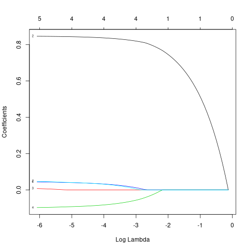
load("~/natural-gas-pipelines/dataAndCode/pipelines.Rdata")
data <- subset(data,report_yr>=1996)
library(glmnet)
mod <- lm(transProfit ~ transPlant_bal_beg_yr + reserve + wellPrice +
cityPrice + plantArea + heatDegDays, data=data, x=T, y=T)
# standardize everything so that coefficients are similar scale when plotted
mod$y <- (mod$y - mean(mod$y))/sd(mod$y)
for(c in 2:ncol(mod$x)) {
mod$x[,c] <- (mod$x[,c] - mean(mod$x[,c]))/sd(mod$x[,c])
}
cv <- cv.glmnet(mod$x, mod$y, alpha=1)
plot(cv)
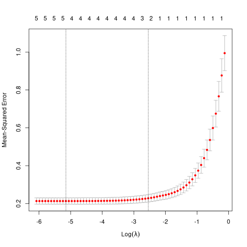
Statistical properties of Lasso¶
- Model :
- $\Er[x_i \epsilon_i] = 0$
- $\beta_0 \in \R^n$
- $p$, $\beta_0$, $x_i$, and $s$ implicitly depend on $n$
- $\log p = o(n^{1/3})$
- $p$ may increase with $n$ and can have $p>n$
- Sparsity $s$
- Exact : $\norm{\beta_0}_0 = s = o(n)$
- Approximate : $|\beta_{0,j}| < Aj^{-a}$, $a > 1/2$, $s \propto n^{1/(2a)}$
$\norm{\beta}_0$ is the number of non-zero components of $\beta$.
The approximate sparsity setting means if $|\beta_{0,j}| < Aj^{-a}$, then, there exists a sparse approximation, say $\beta_{a}$, with $s$ nonzero elements, such that the approximation error, will vanish quickly if $s \propto n^{1/2a}$. Just how quickly will it vanish? An easy upper bound is To simplify the alegebra, let’s assume $\En[x_i x_i’] = I_p$, then where $\zeta(2a) = \sum_{j=1}^\infty j^{-2a}$ is the Riemann Zeta function (all that matters here is that $\zeta(2a)$ is finite for $2a>1$). Then if $s \propto n^{(1+\delta)/2a}$, we would get $c_s \lesssim n^{-(1+\delta)/2}$. Importantly, $\sqrt{n} c_s = o(1)$, so in the sort of expansions that we would do to show that $\hat{\theta}$ is $\sqrt{n}$ asymptotically normal, the bias term would vanish.
Rate of convergence¶
- With $\lambda = 2c \sqrt{n} \Phi^{-1}(1-\gamma/(2p))$
and
-
Constant $c>1$
-
Small $\gamma \to 0$ with $n$, and $\log(1/\gamma) \lesssim \log(p)$
-
Rank like condition on $x_i$
-
-
near-oracle rate
In the semiparametric estimation problems that we’re focused on, our object of interest is some finite dimensional parameter $\theta$ that depends on our data some high dimensional parameter, like $\beta_0$ in the Lasso. To analyze estimates of $\hat{\theta}(data, \hat{\beta})$, a key step will be to show that we can replace $\hat{\beta}$ with $\beta_0$. The rate of convergence of $\hat{\beta}$ will be important for making this possible. Thus, the main thing that we care about for the Lasso and other machine learning estimators will be their rates of converagence.
The notation $A_n \lesssim_P B_n$ is read $A_n$ is bounded in probability by $B_n$ and means that for any $\epsilon>0$, there exists $M$, $N$ such that $\Pr(|A_n/B_n| > M) < \epsilon$ for all $n > N$. This is also often denoted by $A_n = O(B_n)$.
These rate results are from Belloni et al. (2012). Since this setup allows $p>n$, $x$ cannot be assumed to have full rank. Instead, an assumption about the eigenvalues of $X’X$ restricted to the nonzero components of $\beta_0$, plays a similar. See Belloni et al. (2012) for details.
This convergence rate is called the near-oracle rate, because it is nearly as good as what we get if an oracle told us which components of $\beta_0$ are nonzero. In that case OLS using just those $s$ components gives the fastest possible rate, which is
Rate of convergence [rate-of-convergence-1]¶
- Using cross-validation to choose $\lambda$ known bounds are worse
- With Gaussian errors: $\sqrt{\En[(x_i’(\hat{\beta}^{lasso} - \beta_0))^2 ] } \lesssim_P \sqrt{ (s/n) \log (p) } \log(pn)^{7/8}$,
- Without Gaussian error $\sqrt{\En[(x_i’(\hat{\beta}^{lasso} - \beta_0))^2 ] } \lesssim_P \left( \frac{s \log(pn)^2}{n} \right)^{1/4}$
- Chetverikov, Liao, and Chernozhukov (2016)
These results are for an exactly sparse setting. Do they hold under approximate sparsity?
Other statistical properties¶
- Inference on $\beta$: not the goal in our motivating examples
- Model selection: not the goal in our motivating examples
- Under stronger conditions, Lasso correctly selects the nonzero components of $\beta_0$
- See Belloni and Chernozhukov (2011)
In the statistics literature on high dimensional and nonparametric estimation, you will come across the terms “adaptive” and “honest.” Adaptivity of an estimator refers to the situation where the rate of convergence depends on some unknown parameter. In the case of Lasso, the sparsity index of the true model, $s$, is an unknown parameter affecting the rate of convergence. Without knowing or estimating $s$, Lasso attains the above rate of convergence for a wide range of admissable $s$. Thus, Lasso is adaptive to the unknown sparsity index.
“Honest” is a property of an inference method. A confidence region is honest if it has correct coverage for a large class of true models. For the Lasso, an honest confidence region would be valid for a wide range of sparsity, $s$. An honest, adaptive confidence region would be one that is valide for a wide range of $s$ and whose size shrinks as quickly as if $s$ were known. Achieving both adaptivity and honesty is impossible in the most general setting. For example, although an $\ell$ times differentiable function of a $p$ dimensional variable can be adaptively estimated at rate $n^{-\ell}{2\ell + p}$, Li (1989) showed that an honest confidence region can contract at most at rate $n^{-1/4}$ (not adaptive to $\ell$). However, an adaptive confidence region can be constructed if further restrictions are placed on the set of possible models, see Nickl and Geer (2013) for such a result for Lasso..
Post-Lasso¶
-
Two steps :
-
Estimate $\hat{\beta}^{lasso}$
-
${\hat{\beta}}^{post} =$ OLS regression of $y$ on components of $x$ with nonzero $\hat{\beta}^{lasso}$
-
-
Same rates of convergence as Lasso
-
Under some conditions post-Lasso has lower bias
- If Lasso selects correct model, post-Lasso converges at the oracle rate
Post-Lasso removes some of the regularizaton bias of Lasso. The rate of convergence of post-Lasso is always as fast as Lasso, and under conditions that allow perfect model selection, post-Lasso converges slightly faster (by a factor $\log(p)$). See Belloni et al. (2012) for details.
Random forests¶
Regression trees¶
- $y_i \in R$ on $x_i \in \R^p$
- Want to estimate $\Er[y | x]$
- Locally constant estimate
- Rectangular regions $R_m$ determined by tree
Simulated data¶
n <- 1000
x <- runif(n)
y <- runif(n)
f <- function(x,z) {
1/3*(sin(5*x)*sqrt(z)*exp(-(z-0.5)^2))
}
f0 <- f(x,y)
z <- f0 + rnorm(n)*0.1
tree.df <- data.frame(x=x,y=y,z=z)
# plot true function and data
x.g <- seq(0,1,length.out=100)
y.g <- seq(0,1,length.out=100)
f0.g <- t(outer(x.g,y.g,f))
library(plotly)
fig <- plot_ly( colors="YlOrBr")
fig <- add_markers(fig,x=x,y=y,z=z, size=0.3, opacity=0.2)
fig <- add_surface(fig, x=x.g, y=y.g, z=f0.g, opacity=1)
fig
Estimated tree¶
# fit regression tree
library(party)
tree <- ctree(z ~ x + y, data=tree.df)
# plot estimate
x.g <- seq(0,1,length.out=100)
y.g <- seq(0,1,length.out=100)
df <- expand.grid(x.g,y.g)
names(df) <- c("x","y")
fhat.g <- matrix(predict(tree, newdata=df),nrow=length(x.g), byrow=TRUE)
library(plotly)
fig <- plot_ly(colors="YlOrBr")
fig <- add_markers(fig,x=x,y=y,z=z, size=0.3, opacity=0.2)
fig <- add_surface(fig, x=x.g, y=y.g, z=fhat.g, opacity=1)
fig
Estimated tree¶
plot(tree)
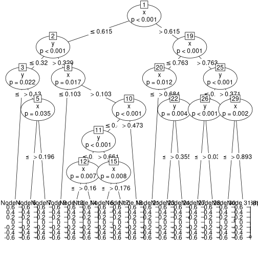
Tree algorithm¶
- For each region, solve
- Repeat with $R = {x:x_{i,j} \leq s^} \cap R$ and $R = {x:x_{i,j} \leq s^} \cap R$
- Stop when $|R| =$ some chosen minimum size
- Prune tree
There are many variations on this tree building algorithm. They all share some rule to decide on which variable and where to split. They all have some kind of stopping rule, but not necessarily the same one. For example, some algorithms stop splitting into new branches when the improvement in $R^2$ becomes small. These trees don’t need subsequent pruning, but also may fail to find later splits that might be important.
As with lasso, regression trees involve some regularization. In the above description, both the minimum leaf size and $\alpha$ in the pruning step serve as regularization parameters.
A potential advantage of regression trees is that their output might be interpretable, especially if there are not many branches. Some disadvantages are that they often are not very good predictors, and small perturbations in data can lead to seemingly large changes in the tree.
Random forests¶
- Average randomized regression trees
- Trees randomized by
- Bootstrap or subsampling
- Randomize branches: where $S$ is random subset of ${1, …, p}$
- Variance reduction
Rate of convergence: regression tree¶
- $x \in [0,1]^p$, $\Er[y|x]$ Lipschitz in $x$
- Crude calculation for single tree, let denote $R_i$ node that contains $x_i$ optimal $m = O(n^{2/(2+p)})$ gives
By a crude calculation, I mean lets treat the tree as fixed. The the variance term is simply from estimating a conditional mean. This analysis could be made more rigorous by assuming the tree was estimated by sample splitting — use half the data to construct the tree and the remaining half to estimate the mean of $y$ in each node. Athey and Wager, and others, refer to such trees as “honest.” I suppose that this is because sample splitting facilitates honest inference afterward.
The order of the bias term comes from considering the width of the pieces of a $p$ dimensional cube split evenly into $n/m$ pieces.
Remember that for our motivating semiparametric problems, we need $\sqrt{n} \Er[(\hat{t}(x_i) - \Er[y|x_i])^2]$ to vanish. The above rate convergence is too slow for $p>2$. The calculation of the above was admittedly crude, and may not be exact. However, Stone (1982) showed that if $\Er[y|x]$ is $\ell$ times differentiable, the fastest possible rate of convergence for any estimator is $n^{\frac{-\ell}{2\ell + p}}$. To have any hope of a fast enough rate, we need to assume the function we’re estimating is very smooth (high $\ell$), or place some other restriction on the class of functions we allow (like sparsity for the Lasso). Lipschitz continuity is slightly weaker than once differentiable on a compact set, so it should come as no surprise that the rate of convergence would be slow.
Rate of convergence: random forest¶
- Result from Biau (2012)
- Assume $\Er[y|x]=\Er[y|x_{(s)}]$, $x_{(s)}$ subset of $s$ variables, then or with optimal $m$
This result from Biau (2012) assumes the forest is estimated with sample splitting. This avoids the difficult to analyze correlation between the nodes and $y$.
Wager and Walther (2015) analyze what happens when the same data is used to construct the tree and average in each node. They get a slightly higher upper bound for the variance of $\frac{\log(p)\log(n)}{m}$. Wager and Walther (2015) also allow $p$ to increase with $n$, whereas the previous analysis treated $p$ as fixed.
These convergence rate results for random forests are not fast enough for our purpose. Does this mean that random forests should not be used in semiparametric estimation? Not necessarily. We’re asking too much of random forests. There is no estimator for an arbitrary Lipschitz function that can have fast enough a rate of convergence. A restriction on the set of possible functions is needed to reduce the approximation bias. With Lasso, the assumption of (approximate) sparsity played that role. Chernozhukov et al. (2018) advise that random forests could be a good choice for semiparametric estimation when the function of interest is “well-approximated by a random forest.” Unfortunately, there does not appear to be a clean mathematical way to describe the class of functions well-approximated by a forest.
Other statistical properties¶
- Pointwise asymptotic normality : Wager and Athey (2018)
Simulation study¶
- Partially linear model
- DGP :
- $x_i \in \R^p$ with $x_{ij} \sim U(0,1)$
- $d_i = m(x_i) + v_i$
- $y_i = d_i\theta + f(x_i) + \epsilon_i$
- $m()$, $f()$ either linear or step functions
- Estimate by OLS, Lasso, and random forest
- Lasso & random forest use orthogonal moments
The point of this simulation is to see whether the slower convergence rate of random forests matters for the semiparametric problems we have in mind. Our theory results suggest that estimates of $\theta$ using random forests with $p>2$ will be asymptotically biased. Specifically, the term will be $O_p(n^{\frac{-2}{2+p}})$, so $\sqrt{n} d_n = O_p(n^{\frac{p-2}{2(2+p)}})$. However, this calculation is only an upper bound on $d_n$. For a given DGP, $d_n$ might be smaller.
In this simulation exercise, when $m()$ and $f()$ are linear, they are not easy to approximate by a regression tree, so I expect the random forest estimator to behave relatively poorly. OLS and Lasso on the other hand will do very well, and are included mainly as benchmarks. When $m()$ and $f()$ are step functions (specifically, $f(x) = m(x) = \sum_{j=1}^p 1(x_{j}>1/2)$), I thought they would be well approximated by a regression tree (and random forest). For OLS and Lasso, $x$ is still only included linearly in the estimation, so those estimators will do poorly in the step function DGP. Throughout the simulation $p$ is much less than $n$, so Lasso and OLS will generally give very similar results.
rm(list=ls())
p <- 4 # number of x's
mu.linear <- function(x) x%*%rep(1,p)
m.linear <- function(x) x%*%rep(2,p)
mu.step <- function(x) (x>0.5)%*%rep(1,p)
m.step <- function(x) (x>0.5)%*%rep(2,p)
theta <- 1
simulate <- function(n,p,mu,m) {
theta <- 1
x <- matrix(runif(n*p), ncol=p)
d <- m(x) + rnorm(n)
y <- theta*d + mu(x) + rnorm(n)
data.frame(y=y,d=d,x=x)
}
library(grf)
library(hdm)
df <- simulate(100,p,mu.linear,m.linear)
mrfparams <- NULL
murfparams <- NULL
n.save <- NULL
partial.linear.rf <- function(df) {
x.names <- names(df)[grep("x.",names(df))]
if (is.null(mrfparams) || n.save!=nrow(df)) {
# to save time, we only tune once per cluster worker and data set
# size
cat("tuning")
m.rf <- regression_forest(df[,x.names], df$d, num.trees=1000,
tune.parameters=TRUE)
mrfparams <<- m.rf$tunable.params
mu.rf <- regression_forest(df[,x.names], df$y, num.trees=1000,
tune.parameters=TRUE)
n.save <<- nrow(df)
murfparams <<- mu.rf$tunable.params
} else {
cat("not tuning")
m.rf <- regression_forest(df[,x.names], df$d, num.trees=200,
tune.parameters=FALSE,
min.node.size =
as.numeric(mrfparams["min.node.size"]),
alpha = as.numeric(mrfparams["alpha"]),
imbalance.penalty=as.numeric(mrfparams["imbalance.penalty"]),
sample.fraction = as.numeric(mrfparams["sample.fraction"]),
mtry=as.numeric(mrfparams["mtry"]))
mu.rf <- regression_forest(df[,x.names], df$y, num.trees=200,
tune.parameters=FALSE,
min.node.size =
as.numeric(murfparams["min.node.size"]),
alpha = as.numeric(murfparams["alpha"]),
imbalance.penalty=as.numeric(murfparams["imbalance.penalty"]),
sample.fraction = as.numeric(murfparams["sample.fraction"]),
mtry=as.numeric(murfparams["mtry"]))
}
vhat <- df$d - predict(m.rf)$predictions
ehat <- df$y - predict(mu.rf)$predictions
lm(ehat ~ vhat)
}
## Manual sample splitting --- this turns out to be unneccessary. The
## default behavior of predict.regression_forest is to return
## predictions on the training data using only trees that were not fit
## on each observation. In other words, regression_forest already does
## the sample splitting for us.
##
## rf.tuneOnce <- function(x.names, y.name) {
## parms <- NULL
## function(df) {
## if (is.null(parms)) {
## rf <- regression_forest(df[,x.names], df[,y.name], num.trees=500,
## tune.parameters=TRUE)
## parms <<- rf$tunable.params
## rf
## } else {
## rf <- regression_forest(df[,x.names], df[,y.name], num.trees=200,
## tune.parameters=FALSE,
## honesty=FALSE,
## min.node.size =
## as.numeric(parms["min.node.size"]),
## alpha = as.numeric(parms["alpha"]),
## imbalance.penalty=as.numeric(parms["imbalance.penalty"]),
## sample.fraction = as.numeric(parms["sample.fraction"]),
## mtry=as.numeric(parms["mtry"]))
## }
## }
## }
## n.save.split <- NULL
## m.hat.rf <- NULL
## mu.hat.rf <- NULL
## partial.linear.split.rf <- function(df , splits=3) {
## x.names <- names(df)[grep("x.",names(df))]
## if (is.null(n.save.split) || n.save.split != nrow(df)) {
## n.save.split <<- nrow(df)
## m.hat.rf <<- rf.tuneOnce(x.names,"d")
## mu.hat.rf <<- rf.tuneOnce(x.names,"y")
## }
## df$group <- sample(1:splits, nrow(df), replace=TRUE)
## vhat <- df$d
## ehat <- df$y
## for(g in 1:splits) {
## sdf <- subset(df, group!=g)
## m <- m.hat.rf(sdf)
## mu <- mu.hat.rf(sdf)
## vhat[df$group==g] <- df$d[df$group==g] -
## predict(m, newx=df[df$group==g,x.names])$predictions
## ehat[df$group==g] <- df$y[df$group==g] -
## predict(mu, newx=df[df$group==g,x.names])$predictions
## }
## lm(ehat ~ vhat)
## }
partial.linear.lasso <- function(df) {
x.names <- names(df)[grep("x.",names(df))]
fmla <- as.formula(paste(c("y ~ d",x.names), collapse=" + "))
rlassoEffects(fmla, data=df, I = ~ d)
}
#summary(partial.linear.lasso(df))
# simulate a bunch of times in parallel
simulations <- 500 # number of simulations
library(parallel)
cl <- makeCluster(detectCores()/2) # change as you see fit
clusterEvalQ(cl,library(hdm))
clusterEvalQ(cl,library(grf))
# R Socket cluster spawns new R sessions with empty environments, we
# need to make sure they load any needed libraries and have access to
# things from the main environment that they use
design <- c("linear") #,"step")
sim.df <- data.frame()
start.time <- Sys.time()
for (d in design) {
if (d=="linear") {
m <- m.linear
mu <- mu.linear
} else {
m <- m.step
mu <- mu.step
}
for (p in c(2,4,6,8)) {
for (n in c(100, 200, 400, 800, 1600)) {
clusterExport(cl,c("simulate","partial.linear.lasso",
"partial.linear.rf","p","mu","m",
"mrfparams","murfparams", "n.save"))
# "partial.linear.split.rf", "n.save.split",
# "m.hat.rf","mu.hat.rf","rf.tuneOnce"))
thetas <- parSapply(cl, rep(n,simulations), function(n)
{
df <- simulate(n, p, mu, m)
x.names <- names(df)[grep("x.",names(df))]
fmla <- as.formula(paste(c("y ~ d",x.names), collapse=" + "))
c(lm(fmla,data=df)$coef[2],
partial.linear.rf(df)$coef[2],
#partial.linear.split.rf(df)$coef[2],
partial.linear.lasso(df)$coefficients)
}
)
tmp <- (data.frame(t(thetas)) - 1)*sqrt(n)
names(tmp) <- c("OLS","Random.Forest","Lasso")
tmp$n <- n
tmp$p <- p
tmp$design <- d
sim.df <- rbind(sim.df, tmp)
cat("finished sample size ",n,"\n")
cat("Elapsed time ", Sys.time()-start.time,"\n")
}
cat("finished p = ",p,"\n")
}
cat("finished design = ", d,"\n")
}
stopCluster(cl)
save(sim.df, file="partialLinearSim.Rdata")
library(ggplot2)
library(reshape2)
library(latex2exp)
TeX <- latex2exp::TeX
load("partialLinearSim.Rdata") # see partialLinearSim.R for simulation
# code
df <- melt(sim.df, measure.vars=c("OLS","Random.Forest","Lasso"))
ggplot(subset(df,p==2), aes(x=value, colour=variable)) +
facet_grid(n ~ design) + geom_density() + theme_minimal() +
xlab(TeX('$\\sqrt{n}(\\hat{\\theta}-\\theta_0)$')) +
ggtitle("p=2")
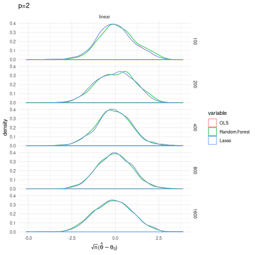
ggplot(subset(df,p==4), aes(x=value, colour=variable)) +
facet_grid(n ~ design) + geom_density() + theme_minimal() +
xlab(unname(TeX("$\\sqrt{n}(\\hat{\\theta} - \\theta_0)$"))) +
ggtitle("p=4")
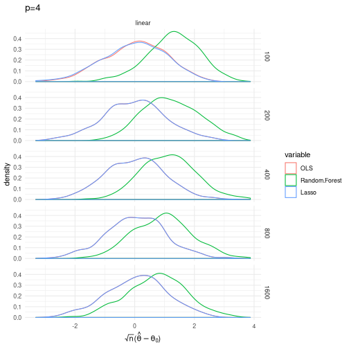
ggplot(subset(df,p==6), aes(x=value, colour=variable)) +
facet_grid(n ~ design) + geom_density() + theme_minimal() +
xlab(unname(TeX("$\\sqrt{n}(\\hat{\\theta} - \\theta_0)$"))) +
ggtitle("p=6")
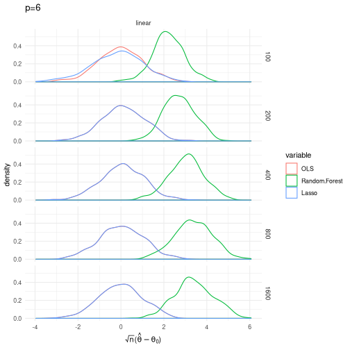
ggplot(subset(df,p==8), aes(x=value, colour=variable)) +
facet_grid(n ~ design) + geom_density() + theme_minimal() +
xlab(unname(TeX("$\\sqrt{n}(\\hat{\\theta} - \\theta_0)$"))) +
ggtitle("p=8")
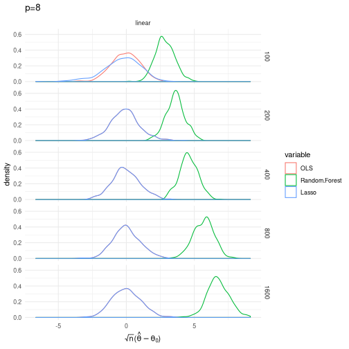
Random forests do not seem to work very well in this context. Even when the functions being estimated are step functions, random forests do not produce a good estimate of $\theta$. One caveat here is that I was not very careful about the tuning parameters for the random forests. It’s possible that there exists a careful choice of tuning parameters that results in a better estimator.
Research idea: create a generalization of random forests that is adaptive to the smoothness of the function being estimated. Two classic papers on adaptive regression estimators are Speckman (1985) and Donoho and Johnstone (1995). Friedberg et al. (2018) develop a local linear forest estimator. Combining their idea of using forests to form local neighborhoods with a smoothness adaptive variant of kernel or local polynomial regression should lead to a smoothness adaptive forest.
Neural Networks¶
- Target function $f: \R^p \to \R$
- e.g. $f(x) = \Er[y|x]$
- Approximate with single hidden layer neural network :
- Activation function $\psi$
- Examples: Sigmoid $\psi(t) = 1/(1+e^{-t})$, Tanh $\psi(t) = \frac{e^t -e^{-t}}{e^t + e^{-t}}$, Heavyside $\psi(t) = t 1(t\geq 0)$
- Weights $a_j$
- Bias $b_j$
- Activation function $\psi$
- Able to approximate any $f$, Hornik, Stinchcombe, and White (1989)
library(RSNNS)
library(devtools)
# download plot.nnet function from github
source_url('https://gist.githubusercontent.com/fawda123/7471137/raw/466c1474d0a505ff044412703516c34f1a4684a5/nnet_plot_update.r')
load("~/natural-gas-pipelines/dataAndCode/pipelines.Rdata")
data <- subset(data,report_yr>=1996)
mod <- lm(transProfit ~ transPlant_bal_beg_yr + reserve + wellPrice +
cityPrice + plantArea + heatDegDays, data=data, x=T, y=T)
xn <- normalizeData(mod$x[,2:ncol(mod$x)])
yn <- normalizeData(mod$y)
nn <- mlp(x=xn, y=yn, linOut=TRUE, size=c(10))
plot.nnet(nn, x.lab=colnames(mod$x)[2:ncol(mod$x)], y.lab="transProfit")
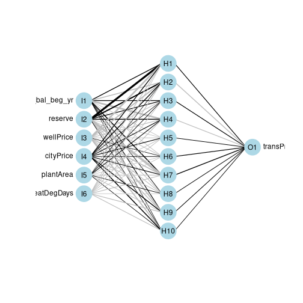
Deep Neural Networks¶
- Many hidden layers
- $x^{(0)} = x$
- $x^{(\ell)}_j = \psi(a_j^{(\ell)} x^{(\ell-1)} + b_j^{(\ell)})$
nn <- mlp(x=xn, y=yn, linOut=TRUE, size=c(5,10,3,5, 6))
plot.nnet(nn, x.lab=colnames(mod$x)[2:ncol(mod$x)], y.lab="transProfit")
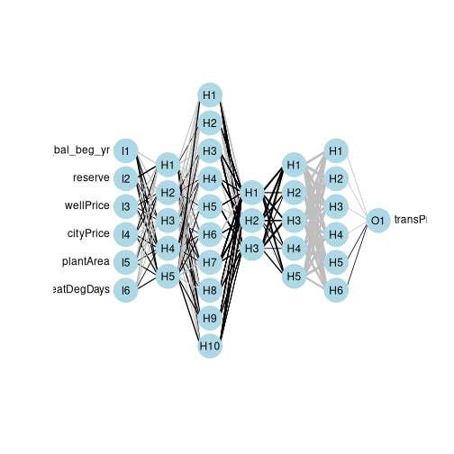
Rate of convergence¶
- Chen and White (1999)
- $f(x) = \Er[y|x]$ with Fourier representation where $\int (\sqrt{a’a} \vee 1) d|\sigma_f|(a) < \infty$
- Network sieve :
The setup in Chen and White (1999) is more general. They consider estimating both $f$ and its first $m$ derivatives. Here, we focus on the case of just estimating $f$. Chen and White (1999) also consider estimation of functions other than conditional expectations.
The restriction on $f$ in the second bullet is used to control approximation error. The second bullet says that $f$ is the inverse Fourier transform of measure $\sigma_f$. The bite of the restriction on $f$ comes from the requirement that $\sigma_f$ be absolutely integral, $\int (\sqrt{a’a} \vee 1) d|\sigma_f|(a) < \infty$. It would be a good exercise to check whether this restriction is satisfied by some familiar types of functions. Barron (1993) first showed that neural networks approximate this class of functions well, and compares the approximation rate of neural networks to other function approximation results.
Rate of convergence [rate-of-convergence-3]¶
-
Estimate
-
For fixed $p$, if $r_n^{2(1+1/(1+p))} \log(r_n) = O(n)$, $B_n \geq$ some constant
It is easy to see that regardless of $p$, $\sqrt{n}\Er[(\hat{f}(x) - f(x))^2] \to 0$. Therefore, neural networks would be suitable for estimating the nuisance functions in our examples above.
There is a gap between applied use of neural networks and this statistical theory. These rate results are for networks with a single hidden layer. In prediction applications, the best performance is typically achieved by deep neural networks with many hidden layers. Intuitively, multiple hidden layers should do at least as well as a single hidden layer.
There are some recent theoretical results that formalize this intuition. FIXME: ADD CITATIONS.
Simulation Study¶
- Same setup as for random forests earlier
- Partially linear model
- DGP :
- $x_i \in \R^p$ with $x_{ij} \sim U(0,1)$
- $d_i = m(x_i) + v_i$
- $y_i = d_i\theta + f(x_i) + \epsilon_i$
- $m()$, $f()$ either linear or step functions
- Estimate by OLS, Neural network with & without cross-fitting
- Using orthogonal moments
rm(list=ls())
p <- 4 # number of x's
mu.linear <- function(x) x%*%rep(1,p)
m.linear <- function(x) x%*%rep(2,p)
mu.step <- function(x) (x>0.5)%*%rep(1,p)
m.step <- function(x) (x>0.5)%*%rep(2,p)
theta <- 1
simulate <- function(n,p,mu,m) {
theta <- 1
x <- matrix(runif(n*p), ncol=p)
d <- m(x) + rnorm(n)
y <- theta*d + mu(x) + rnorm(n)
data.frame(y=y,d=d,x=x)
}
library(grf)
library(hdm)
df <- simulate(100,p,mu.linear,m.linear)
mrfparams <- NULL
murfparams <- NULL
n.save <- NULL
partial.linear.rf <- function(df) {
x.names <- names(df)[grep("x.",names(df))]
if (is.null(mrfparams) || n.save!=nrow(df)) {
# to save time, we only tune once per cluster worker and data set
# size
cat("tuning")
m.rf <- regression_forest(df[,x.names], df$d, num.trees=1000,
tune.parameters=TRUE)
mrfparams <<- m.rf$tunable.params
mu.rf <- regression_forest(df[,x.names], df$y, num.trees=1000,
tune.parameters=TRUE)
n.save <<- nrow(df)
murfparams <<- mu.rf$tunable.params
} else {
cat("not tuning")
m.rf <- regression_forest(df[,x.names], df$d, num.trees=200,
tune.parameters=FALSE,
min.node.size =
as.numeric(mrfparams["min.node.size"]),
alpha = as.numeric(mrfparams["alpha"]),
imbalance.penalty=as.numeric(mrfparams["imbalance.penalty"]),
sample.fraction = as.numeric(mrfparams["sample.fraction"]),
mtry=as.numeric(mrfparams["mtry"]))
mu.rf <- regression_forest(df[,x.names], df$y, num.trees=200,
tune.parameters=FALSE,
min.node.size =
as.numeric(murfparams["min.node.size"]),
alpha = as.numeric(murfparams["alpha"]),
imbalance.penalty=as.numeric(murfparams["imbalance.penalty"]),
sample.fraction = as.numeric(murfparams["sample.fraction"]),
mtry=as.numeric(murfparams["mtry"]))
}
vhat <- df$d - predict(m.rf)$predictions
ehat <- df$y - predict(mu.rf)$predictions
lm(ehat ~ vhat)
}
## Manual sample splitting --- this turns out to be unneccessary. The
## default behavior of predict.regression_forest is to return
## predictions on the training data using only trees that were not fit
## on each observation. In other words, regression_forest already does
## the sample splitting for us.
##
## rf.tuneOnce <- function(x.names, y.name) {
## parms <- NULL
## function(df) {
## if (is.null(parms)) {
## rf <- regression_forest(df[,x.names], df[,y.name], num.trees=500,
## tune.parameters=TRUE)
## parms <<- rf$tunable.params
## rf
## } else {
## rf <- regression_forest(df[,x.names], df[,y.name], num.trees=200,
## tune.parameters=FALSE,
## honesty=FALSE,
## min.node.size =
## as.numeric(parms["min.node.size"]),
## alpha = as.numeric(parms["alpha"]),
## imbalance.penalty=as.numeric(parms["imbalance.penalty"]),
## sample.fraction = as.numeric(parms["sample.fraction"]),
## mtry=as.numeric(parms["mtry"]))
## }
## }
## }
## n.save.split <- NULL
## m.hat.rf <- NULL
## mu.hat.rf <- NULL
## partial.linear.split.rf <- function(df , splits=3) {
## x.names <- names(df)[grep("x.",names(df))]
## if (is.null(n.save.split) || n.save.split != nrow(df)) {
## n.save.split <<- nrow(df)
## m.hat.rf <<- rf.tuneOnce(x.names,"d")
## mu.hat.rf <<- rf.tuneOnce(x.names,"y")
## }
## df$group <- sample(1:splits, nrow(df), replace=TRUE)
## vhat <- df$d
## ehat <- df$y
## for(g in 1:splits) {
## sdf <- subset(df, group!=g)
## m <- m.hat.rf(sdf)
## mu <- mu.hat.rf(sdf)
## vhat[df$group==g] <- df$d[df$group==g] -
## predict(m, newx=df[df$group==g,x.names])$predictions
## ehat[df$group==g] <- df$y[df$group==g] -
## predict(mu, newx=df[df$group==g,x.names])$predictions
## }
## lm(ehat ~ vhat)
## }
partial.linear.lasso <- function(df) {
x.names <- names(df)[grep("x.",names(df))]
fmla <- as.formula(paste(c("y ~ d",x.names), collapse=" + "))
rlassoEffects(fmla, data=df, I = ~ d)
}
#summary(partial.linear.lasso(df))
# simulate a bunch of times in parallel
simulations <- 500 # number of simulations
library(parallel)
cl <- makeCluster(detectCores()/2) # change as you see fit
clusterEvalQ(cl,library(hdm))
clusterEvalQ(cl,library(grf))
# R Socket cluster spawns new R sessions with empty environments, we
# need to make sure they load any needed libraries and have access to
# things from the main environment that they use
design <- c("linear") #,"step")
sim.df <- data.frame()
start.time <- Sys.time()
for (d in design) {
if (d=="linear") {
m <- m.linear
mu <- mu.linear
} else {
m <- m.step
mu <- mu.step
}
for (p in c(2,4,6,8)) {
for (n in c(100, 200, 400, 800, 1600)) {
clusterExport(cl,c("simulate","partial.linear.lasso",
"partial.linear.rf","p","mu","m",
"mrfparams","murfparams", "n.save"))
# "partial.linear.split.rf", "n.save.split",
# "m.hat.rf","mu.hat.rf","rf.tuneOnce"))
thetas <- parSapply(cl, rep(n,simulations), function(n)
{
df <- simulate(n, p, mu, m)
x.names <- names(df)[grep("x.",names(df))]
fmla <- as.formula(paste(c("y ~ d",x.names), collapse=" + "))
c(lm(fmla,data=df)$coef[2],
partial.linear.rf(df)$coef[2],
#partial.linear.split.rf(df)$coef[2],
partial.linear.lasso(df)$coefficients)
}
)
tmp <- (data.frame(t(thetas)) - 1)*sqrt(n)
names(tmp) <- c("OLS","Random.Forest","Lasso")
tmp$n <- n
tmp$p <- p
tmp$design <- d
sim.df <- rbind(sim.df, tmp)
cat("finished sample size ",n,"\n")
cat("Elapsed time ", Sys.time()-start.time,"\n")
}
cat("finished p = ",p,"\n")
}
cat("finished design = ", d,"\n")
}
stopCluster(cl)
save(sim.df, file="partialLinearSim.Rdata")
library(ggplot2)
library(reshape2)
library(latex2exp)
TeX <- latex2exp::TeX
load("partialLinearSimNet.Rdata") # see partialLinearSim.R for simulation
# code
df <- melt(sim.df, measure.vars=names(sim.df)[1:3])
ggplot(subset(df,p==2), aes(x=value, colour=variable)) +
facet_grid(n ~ design) + geom_density() + theme_minimal() +
xlab(TeX('$\\sqrt{n}(\\hat{\\theta}-\\theta_0)$')) +
ggtitle("p=2")
ggplot(subset(df,p==4), aes(x=value, colour=variable)) +
facet_grid(n ~ design) + geom_density() + theme_minimal() +
xlab(unname(TeX("$\\sqrt{n}(\\hat{\\theta} - \\theta_0)$"))) +
ggtitle("p=4")
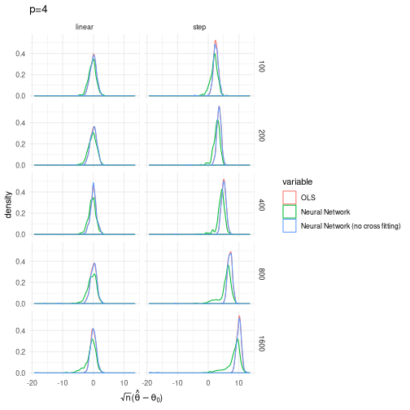
ggplot(subset(df,p==6), aes(x=value, colour=variable)) +
facet_grid(n ~ design) + geom_density() + theme_minimal() +
xlab(unname(TeX("$\\sqrt{n}(\\hat{\\theta} - \\theta_0)$"))) +
ggtitle("p=6")
ggplot(subset(df,p==8), aes(x=value, colour=variable)) +
facet_grid(n ~ design) + geom_density() + theme_minimal() +
xlab(unname(TeX("$\\sqrt{n}(\\hat{\\theta} - \\theta_0)$"))) +
ggtitle("p=8")
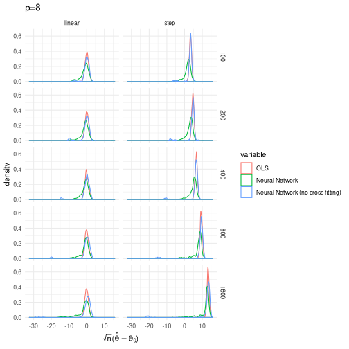
The performance of the neural network estimator appears okay, but not outstanding in these simulations. In the linear model, the neural network estimator performs slightly worse than OLS. In the step function model, the neural network estimator performs slight better than the misspecified OLS, but neither appears to work well. In both cases, it appears that the neural network estimator produces occassional outliers. I believe that this is related to the fact that the minimization problem defining the neural network is actually very difficult to solve. In the simulation above, I suspect the outlying estimates are due to minimization problems. In the simulations, I simply set $r_n = n^{1/(2(1+1/(1+p)))}$. It’s likely that a more careful choice of $r_n$, perhaps using cross-validation, would give better results.
Bibliography¶
Barron, A. R. 1993. “Universal Approximation Bounds for Superpositions of a Sigmoidal Function.” IEEE Transactions on Information Theory 39 (3): 930–45. https://doi.org/10.1109/18.256500.
Belloni, A., D. Chen, V. Chernozhukov, and C. Hansen. 2012. “Sparse Models and Methods for Optimal Instruments with an Application to Eminent Domain.” Econometrica 80 (6): 2369–2429. https://doi.org/10.3982/ECTA9626.
Belloni, Alexandre, and Victor Chernozhukov. 2011. “High Dimensional Sparse Econometric Models: An Introduction.” In Inverse Problems and High-Dimensional Estimation: Stats in the Château Summer School, August 31 - September 4, 2009, edited by Pierre Alquier, Eric Gautier, and Gilles Stoltz, 121–56. Berlin, Heidelberg: Springer Berlin Heidelberg. https://doi.org/10.1007/978-3-642-19989-9_3.
Biau, Gérard. 2012. “Analysis of a Random Forests Model.” Journal of Machine Learning Research 13 (Apr): 1063–95. http://www.jmlr.org/papers/v13/biau12a.html.
Caner, Mehmet, and Anders Bredahl Kock. 2018. “Asymptotically Honest Confidence Regions for High Dimensional Parameters by the Desparsified Conservative Lasso.” Journal of Econometrics 203 (1): 143–68. https://doi.org/https://doi.org/10.1016/j.jeconom.2017.11.005.
Chen, Xiaohong, and H. White. 1999. “Improved Rates and Asymptotic Normality for Nonparametric Neural Network Estimators.” IEEE Transactions on Information Theory 45 (2): 682–91. https://doi.org/10.1109/18.749011.
Chernozhukov, Victor, Denis Chetverikov, Mert Demirer, Esther Duflo, Christian Hansen, Whitney Newey, and James Robins. 2018. “Double/Debiased Machine Learning for Treatment and Structural Parameters.” The Econometrics Journal 21 (1): C1–C68. https://doi.org/10.1111/ectj.12097.
Chernozhukov, Victor, Chris Hansen, and Martin Spindler. 2016. “hdm: High-Dimensional Metrics.” R Journal 8 (2): 185–99. https://journal.r-project.org/archive/2016/RJ-2016-040/index.html.
Chetverikov, Denis, Zhipeng Liao, and Victor Chernozhukov. 2016. “On Cross-Validated Lasso.” https://arxiv.org/abs/1605.02214.
Donoho, David L., and Iain M. Johnstone. 1995. “Adapting to Unknown Smoothness via Wavelet Shrinkage.” Journal of the American Statistical Association 90 (432): 1200–1224. http://www.jstor.org/stable/2291512.
Efron, Bradley, and Trevor Hastie. 2016. Computer Age Statistical Inference. Vol. 5. Cambridge University Press. https://web.stanford.edu/~hastie/CASI/.
Friedberg, Rina, Julie Tibshirani, Susan Athey, and Stefan Wager. 2018. “Local Linear Forests.” https://arxiv.org/abs/1807.11408.
Friedman, Jerome, Trevor Hastie, and Robert Tibshirani. 2009. The Elements of Statistical Learning. Springer series in statistics. https://web.stanford.edu/~hastie/ElemStatLearn/.
Hornik, Kurt, Maxwell Stinchcombe, and Halbert White. 1989. “Multilayer Feedforward Networks Are Universal Approximators.” Neural Networks 2 (5): 359–66. https://doi.org/https://doi.org/10.1016/0893-6080(89)90020-8.
James, Gareth, Daniela Witten, Trevor Hastie, and Robert Tibshirani. 2013. An Introduction to Statistical Learning. Vol. 112. Springer. http://www-bcf.usc.edu/%7Egareth/ISL/.
Lee, Jason D., Dennis L. Sun, Yuekai Sun, and Jonathan E. Taylor. 2016. “Exact Post-Selection Inference, with Application to the Lasso.” Ann. Statist. 44 (3): 907–27. https://doi.org/10.1214/15-AOS1371.
Li, Ker-Chau. 1989. “Honest Confidence Regions for Nonparametric Regression.” Ann. Statist. 17 (3): 1001–8. https://doi.org/10.1214/aos/1176347253.
Mullainathan, Sendhil, and Jann Spiess. 2017. “Machine Learning: An Applied Econometric Approach.” Journal of Economic Perspectives 31 (2): 87–106. https://doi.org/10.1257/jep.31.2.87.
Nickl, Richard, and Sara van de Geer. 2013. “Confidence Sets in Sparse Regression.” Ann. Statist. 41 (6): 2852–76. https://doi.org/10.1214/13-AOS1170.
Speckman, Paul. 1985. “Spline Smoothing and Optimal Rates of Convergence in Nonparametric Regression Models.” The Annals of Statistics 13 (3): 970–83. http://www.jstor.org/stable/2241119.
Stone, Charles J. 1982. “Optimal Global Rates of Convergence for Nonparametric Regression.” The Annals of Statistics 10 (4): 1040–53. http://www.jstor.org/stable/2240707.
Taylor, Jonathan, and Robert Tibshirani. 2017. “Post-Selection Inference for -Penalized Likelihood Models.” Canadian Journal of Statistics 46 (1): 41–61. https://doi.org/10.1002/cjs.11313.
Wager, Stefan, and Susan Athey. 2018. “Estimation and Inference of Heterogeneous Treatment Effects Using Random Forests.” Journal of the American Statistical Association 0 (0): 1–15. https://doi.org/10.1080/01621459.2017.1319839.
Wager, Stefan, and Guenther Walther. 2015. “Adaptive Concentration of Regression Trees, with Application to Random Forests.” https://arxiv.org/abs/1503.06388.